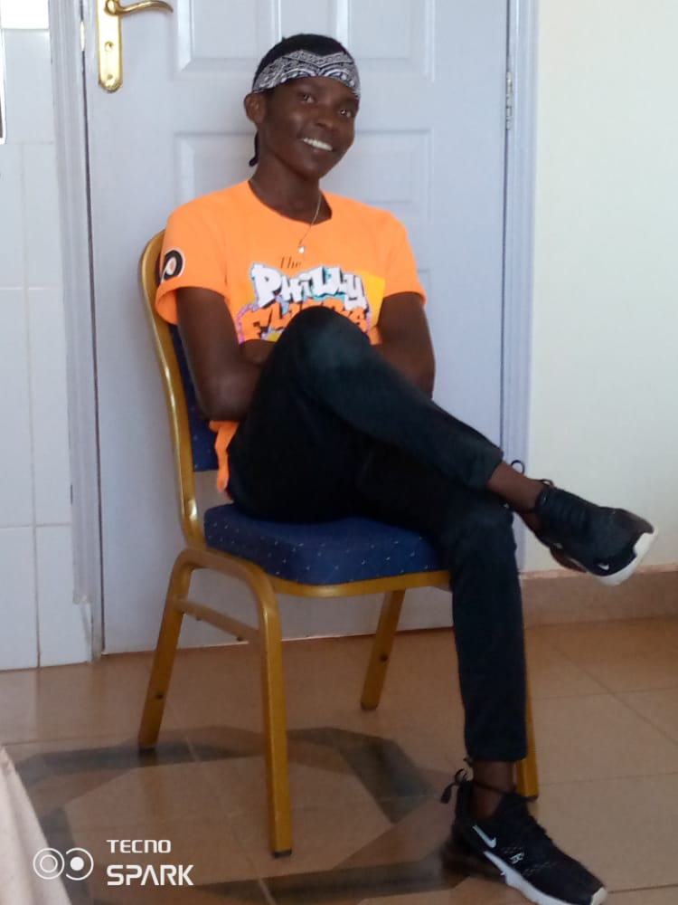

Project members
Eric
Eric,born in the year 2003 is a gifted photographer whose passion for photography began at a early age after realization that life's most beautiful and profound moments are often ephemeral. since my photography journey began, I have seen a million sunsets and I loved it when i see a flock of birds move across the sky and of course, I've captured each on film. It is evident that photography work creates a visual impression on something and can be used to explain many aspects of life.
Diane Arbus

Diane is an American photographer whose favourite subjects were marginalized people, standing on the fringes of society: tattooed men, circus performers, transgender and disabled people were her most iconic models. She highlighted the importance of equality at a time when not many people were willing to face the marginalized and recognizw them as functioning parts of society.